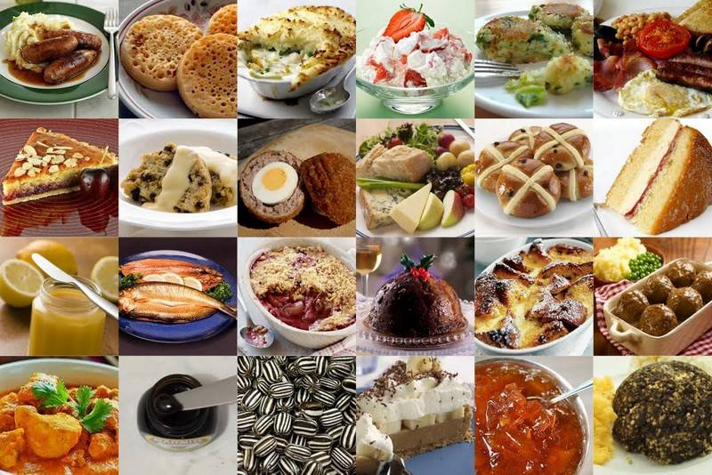

The Britain is not exactly known for its culinary prowess, however the british do have a couple of Traditional Dishes that would leave even the mouthes of the fans of the famed italian and french cuisine.in this article we will consider 3 of such Dishes and their recipes,ingridients and methods of preparation to start us of we will begin with the scrumptuous Sunday roast which leaves one begging for more.The sunday roast is one of the most popular weekend foods in britain especially on family gatherings.